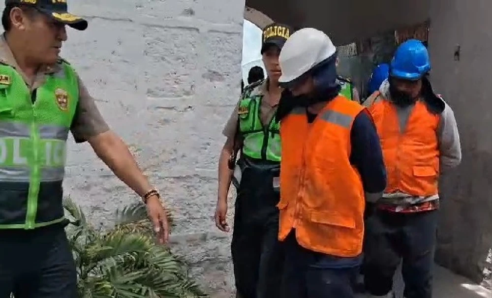
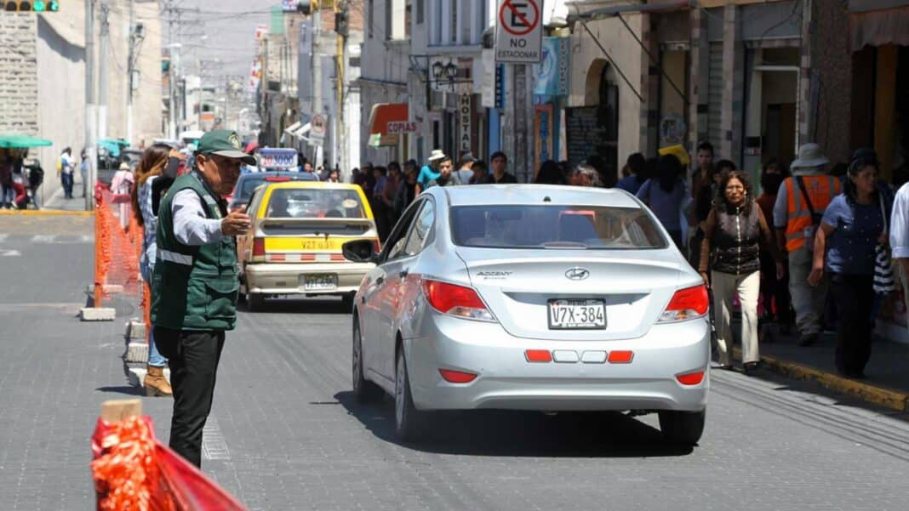

Arequipa: detienen a siete falsos obreros por robar cables de cobre subterráneo valorizado en más de 25 mil soles
El jefe de la División de Orden Público y Seguridad, Guliano Arguedas, señaló que la detención se realizó en la avenida Alfonso Ugarte, esto en el Cercado de Arequipa, lugar hasta donde los investigados habían llegado en un camión y una camioneta disfrazado de obreros con distintivos de una empresa de telefonia móvil para sustraer el cable subterráneo.
Los sujetos fueron identificados como Rodrigo Sairi Compi, Gean Marco Carbajal Lazo, Russel Surco Flores, David Turpo Barrientos, Christian Nina Quispe, Orlando Quispe Serna y Alex Turpo Mendoza. Este robo de cables provocó la afectación del servicio de internet en el sector de Tingo así como zonas aledañas de la zona.
Estas personas serán investigadas por el presunto delito de robo agravado. El caso quedó en manos de la fiscal Lizeth Gómez Saire, de la Primera Fiscalía Provincial Penal Corporativa de Arequipa.
Plaqueo en Arequipa inicia el 6 de octubre: conoce restricciones por día y calles de ingreso
La Municipalidad Provincial de Arequipa anuncia el inicio de una etapa de pruebas para el sistema de restricción de circulación. El objetivo del plaqueo es descongestionar y reducir los niveles de contaminación en su emblemático Centro Histórico.
A partir del 6 de octubre, se pondrá en marcha una fase de prueba en vacío del denominado plaqueo vehicular. Esta medida regulatoria afectará el acceso al corazón monumental de la ciudad.
El perímetro específico delimitado será las avenidas La Paz, Jorge Chávez, Salaverry y la calle Ayacucho, extendiéndose hasta el margen del río Chili.